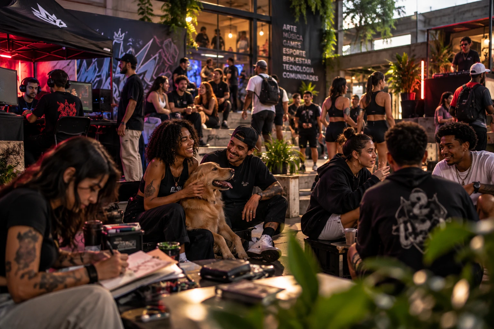

Marketing que move
comunidades.
Quando uma marca quer falar com gamers, com quem vive o wellness ou com o público 50+, anúncio não basta. É preciso entrar na conversa do jeito certo, com quem já tem a confiança daquela comunidade.
Cada comunidade
tem seus códigos.

Gamers
Do casual ao competitivo. Falamos a língua de quem joga, assiste e cria.
- Patrocínio de streamers e times
- Ativações dentro dos jogos
- Campeonatos e eventos próprios
Twitch · Discord · YouTube · Torneios

Wellness
Saúde, movimento e equilíbrio. Conteúdo com credibilidade, sem promessa milagrosa.
- Embaixadores e profissionais de saúde
- Desafios e programas de hábito
- Aulas, eventos e retiros
Instagram · YouTube · Podcasts · Estúdios

Seniors 50+
O público que mais cresce e o menos ouvido pelas marcas. Respeito, clareza e utilidade.
- Grupos e comunidades no WhatsApp
- Conteúdo educativo e de serviço
- Experiências presenciais
WhatsApp · Facebook · YouTube · TV conectada

Esportes & corrida
Assessorias, clubes e provas. Marcas que entram no treino, não só na linha de chegada.
- Clubes de corrida da marca
- Patrocínio e ativação em provas
- Desafios no Strava
Strava · Instagram · Assessorias · Provas de rua

Pets
Tutores tratam pet como família. Conteúdo com afeto, informação e bom humor.
- Petfluencers e tutores criadores
- Parcerias com ONGs e abrigos
- Eventos e feiras de adoção
Instagram · TikTok · ONGs · Pet shops

Mães & famílias
Rotina corrida, decisões importantes. Informação confiável e uma rede de apoio.
- Rede de mães criadoras de conteúdo
- Conteúdo educativo e prático
- Ativações em escolas e eventos
Instagram · WhatsApp · Grupos · Escolas
Sua comunidade não está aqui? Mapeamos qualquer nicho, de colecionadores a produtores rurais. Conte qual é.
Antes de entrar.
O que as marcas mais perguntam antes de começar um projeto de comunidade.
Não é preciso ser uma marca gamer para falar com gamers, mas é preciso trazer valor: um produto útil, uma experiência, um espaço, um patrocínio que ajude a comunidade a crescer. Quando o encaixe não existe, a gente fala isso logo no início.
Criadores são parte importante, mas o trabalho envolve também moderadores, clubes, eventos, grupos e canais próprios da marca. O objetivo é construir presença contínua, não uma publicação isolada.
Acompanhamos alcance e engajamento qualificado, sentimento das conversas, crescimento de base própria (seguidores, membros, cadastros) e, sempre que possível, vendas com cupons, links e códigos exclusivos.
O que funciona na comunidade vira criativo para mídia paga, e a mídia amplia o alcance das ações. Como tudo fica na Crew, as frentes compartilham dados e aprendizados.